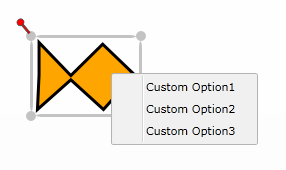

The context menu of the nodes can be customized by adding ContextMenuControlItem, as shown in the following code snippets.
|
[XAML]
<syncfusion:Node Shape="Ellipse" Width="100" Height="100"> <syncfusion:Node.ContextMenu> <syncfusion:ContextMenuControl> <syncfusion:ContextMenuControl.Items> <syncfusion:ContextMenuControlItem Header="Option1"/> <syncfusion:ContextMenuControlItem Header="Option2"/> <syncfusion:ContextMenuControlItem Header="Option3"/> </syncfusion:ContextMenuControl.Items> </syncfusion:ContextMenuControl> </syncfusion:Node.ContextMenu> </syncfusion:Node> |
|
[C#]
ContextMenuControl menu = new ContextMenuControl(); ContextMenuControlItem item1 = new ContextMenuControlItem(); item1.Header = "Custom Option1"; ContextMenuControlItem item2 = new ContextMenuControlItem(); item2.Header = "Custom Option2"; ContextMenuControlItem item3 = new ContextMenuControlItem(); item3.Header = "Custom Option3"; menu.Items.Add(item1); menu.Items.Add(item2); menu.Items.Add(item3); node1.ContextMenu = menu; |
|
[VB] Dim menu As New ContextMenuControl() Dim item1 As New ContextMenuControlItem() item1.Header = "Custom Option1" Dim item2 As New ContextMenuControlItem() item2.Header = "Custom Option2" Dim item3 As New ContextMenuControlItem() item3.Header = "Custom Option3" menu.Items.Add(item1) menu.Items.Add(item2) menu.Items.Add(item3) node1.ContextMenu = menu |
Similarly, the context menu of the connectors can be customized by adding ContextMenuControlItem, as shown in the following code snippet.
|
[C#] LineConnector line = new LineConnector(); line.ContextMenu = menu; |
|
[VB] Dim line As New LineConnector() line.ContextMenu = menu |

Figure 169: Custom Context Menu
The context menu can also be assigned to all the nodes on a page by using the NodeContextMenu property. Similarly, DiagramView’s LineConnectorContextMenu property can be used to assign the customized context menu to all the lines on a page, as shown in the following code snippet.
|
[C#]
ContextMenuControl menu1 = new ContextMenuControl(); ContextMenuControlItem item11 = new ContextMenuControlItem(); item11.Header = "Custom Option11"; ContextMenuControlItem item21 = new ContextMenuControlItem(); item21.Header = "Custom Option21"; ContextMenuControlItem item31 = new ContextMenuControlItem(); item31.Header = "Custom Option31"; menu1.Items.Add(item11); menu1.Items.Add(item21); menu1.Items.Add(item31); diagramView.NodeContextMenu = menu1; diagramView.LineConnectorContextMenu = menu1;
|
|
[VB]
Dim menu1 As New ContextMenuControl() Dim item11 As New ContextMenuControlItem() item11.Header = "Custom Option11" Dim item21 As New ContextMenuControlItem() item21.Header = "Custom Option21" Dim item31 As New ContextMenuControlItem() item31.Header = "Custom Option31" menu1.Items.Add(item11) menu1.Items.Add(item21) menu1.Items.Add(item31) diagramView.NodeContextMenu = menu1 diagramView.LineConnectorContextMenu = menu1
|
 Note:
Note:
If a context menu is assigned to all the nodes on a page by using Node’s ContextMenu property and DiagramView’s NodeContextMenu property, then Node’s ContextMenu property will take precedence over DiagramView’s NodeContextMenu property.
Properties
The property of the context menu for the nodes and line connectors is described in the following tabulation:
Table 18: Property Table
|
Property |
Description |
Type |
Data Type |
Reference links |
|
ContextMenu |
Refers to an instance of ContextMenuControl for the Node and LineConnector. |
Dependency property |
ContextMenuControl |
Not applicable |